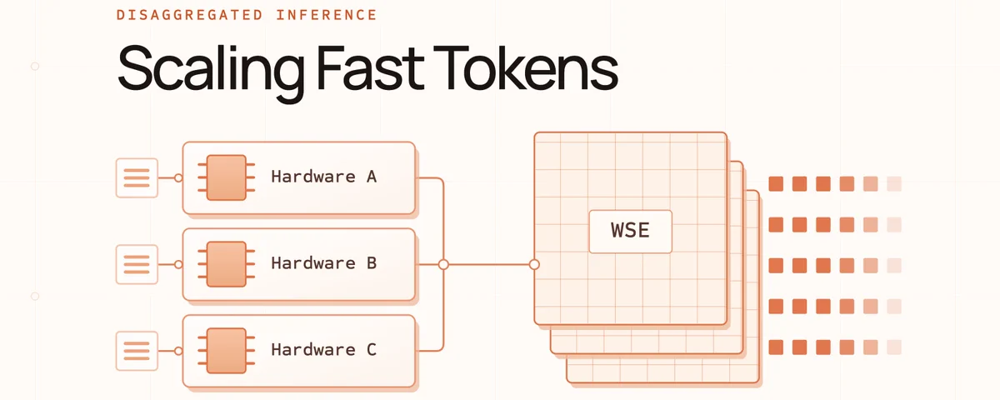

提推理吞吐的传统办法是加硬件或加并发，但推高并发会拖慢每个用户的token生成。Cerebras在10月2日发了篇长文，用解耦在同样数量的系统上把吞吐提了5倍，token速度不降。
这篇是系列第一篇，从第一性原理讲：加速器怎么平衡算力和数据搬运、推理分哪几个阶段、为什么它们对硬件的要求不一样、解耦怎么让整个系统变好。下面拆开。
传统上提推理吞吐就是两条路：加硬件，或者让服务器同时服务更多请求。但推高并发有个代价：每个用户的token生成变慢。生产里经常batch请求，一次给几个用户各生成一个新token，这样能分摊读模型权重的开销，但batch越大，每步decode越久，总吞吐涨了，每个人拿token的速度慢了。
Cerebras用的技术叫解耦。早期结果：同样数量的Cerebras系统，吞吐5倍，token生成速度不损失。Cerebras还在主导异构解耦的开发：把多种芯片放进一个推理系统，给推理里访存密集和算力密集的部分各配不同的硬件，收益超过同构解耦。

加速器是为特定计算加速的硬件，GPU是一种。可以把它想成两部分配合执行程序：计算单元做算术（加、乘、位运算），内存存数据（用户输入、模型权重、中间值、结果）。算术只发生在计算单元里，不在内存里，所以每次计算都要搬数据。高效用加速器的诀窍：一次搬运换尽量多的算术，数据从内存搬到计算单元后，做多少计算才搬下一批。
算术强度就是衡量这个效率：浮点运算数除以搬运字节数。矩阵加法是个例子：读两个矩阵、加、写回。两个数各2字节，做1次FLOP，加写回2字节结果，1 FLOP除以6字节，算术强度0.167 FLOP每字节。矩阵做大，加法量和搬运量同比例涨，算术强度不变。
矩阵乘法不一样：每个输出值由第一矩阵整行和第二矩阵整列拼出来。输入值还是各读一次、结果写一次，但每个读进来的值能贡献给更多输出值。搬运量随矩阵元数涨，算术量涨得更快。即使只动第二个矩阵，算术强度也随输入尺寸涨。这个“输入尺寸和算术强度的关系”，是理解推理不同阶段的关键。
推理是一长串矩阵乘法。生成一个token，简化看就是模型权重矩阵和输入token矩阵做一次矩阵运算：左矩阵是推理时固定的权重，右矩阵是输入token，每列是token的数值表示。按播放键能看到全过程：先是prefill，模型并行处理整个prompt（比如“may the force”），产出第一个回复token“be”；然后是decode，一个一个往外吐“with”“you”。
prefill算术强度高，因为整个prompt并行处理，是个大矩阵运算。真实prompt动不动几千几十万token，传个100页PDF给聊天机器人，本质就是一次巨型矩阵计算。decode则靠KV cache避开重复计算：cache存了前面token的key和value，不用重算，但cache随上下文变大，读写它的活越来越多。结果是个小得多的矩阵运算。
两个阶段有个共同点：都要把全部模型权重搬到计算单元，几百GB甚至TB，为生成一个token搬一次，不管是处理百万token prompt的prefill，还是处理一个新token的decode。搬运量相似，算力需求差很多，这就是prefill和decode算术强度天差地别的原因。
生产里推理服务器同时处理很多请求，有的在prefill，有的在decode。跑在同一硬件上时它们互相干扰：prefill算力密集，会卡住正在进行的decode。调度器决定请求怎么分配和排优先级，优先prefill让新请求更快开始，但会打断正在流式输出的用户；优先decode让老请求顺滑，但新prompt可能等很久才有第一个字。
聚合系统（prefill和decode跑同一批机器）必须选边：新请求的首token快、老响应的流式顺滑、总吞吐最大，三者只能按应用取舍。这种耦合是解耦要解决的根本问题。
解耦是个系统设计模式：识别出资源需求不同的工作，分开跑，不逼它们共享一池硬件。解耦系统用两个独立硬件池，一个做prefill，一个做decode。共享池里首token时间和token间延迟直接耦合，新prompt会拖慢老响应，保护老响应又让新prompt干等；分开之后耦合断了。
解耦不只是“流式更顺”，它改变了服务系统的控制面。容量、batching、调度决策原来对两个阶段一起生效，分开后每个池独立调：硬件配多少、batch策略、保延迟还是保吞吐，按产品需求来。对首token时间敏感的系统给prefill多留容量，prompt进来马上开工不吃decode的资源；要流式顺滑的给decode更大或调度更紧的池，prompt流量spike时老响应照样走。
代价是KV cache要在池间搬运。prefill建好cache，传给decode池装进内存才能继续生成。模型权重两边本来就有，跨边界的是请求相关状态。搬运有网络和协调开销，池容量配不齐还会一池闲一池忙，延迟也看cache是同机房传还是跨地域传。所以解耦在规模上最划算：并发足够大时，独立配比和调度省下的，超过搬状态和运两套池的成本。
前面的例子是两个同构池，异构解耦更进一步：每个池可以用不同硬件。问题从“哪个加速器跑这个模型”变成“哪组加速器组合最配这个负载”。在一个维度上特别强的加速器（prompt处理、内存带宽、token速度、成本效率）能把这个维度做到极致，整体超过单芯片解耦。
为什么WSE适合decode？decode的特点是搬很多数据只产一个新token，算术强度低，加FLOP不一定让token更快，得喂更多数据。GPU上模型数据住HBM，算之前要经片上SRAM和缓存层层暂存，容量大但数据要从共享外部内存长途跋涉到计算核。Cerebras反着来：SRAM和计算单元一起分布在整片晶圆上，计算吃附近的内存，整片聚合内存带宽极高，正好对上token-by-token生成的胃口。
算笔账：5块GPU，每块80%时间跑prefill、20%跑decode，一个活跃响应的token只有它的GPU在做decode步时才往前走，4/5的时间被prefill拖慢。5块GPU里decode只占1块的量，理想稳态下解耦就是把这1块的活交给专用decode GPU、4块专做prefill，同样的卡数，token节奏变好。GPU花在prefill的时间越多，提升越大；如果本来就在decode上花大头，同构解耦能挤的干扰就少。但消干扰只是解耦的理由之一，异构解耦优化的是硬件专业化：5片WSE原来两阶段都干，把prefill搬到别的加速器池，晶圆专啃decode，这是每WSE吞吐的提升，代价是多加prefill硬件。
Agent应用特别吃这套：多轮长流程，上下文随模型调用越长越长，每步的延迟累加。任务越长、越重要，推理快不快直接决定agent体感有多敏捷、任务多久做完。
Cerebras的落点很直白：用合作伙伴的加速器扛prefill，同样WSE数量下早期测试吞吐5倍。已经宣布了多个硬件合作，要把更多极速token推向市场。需求侧也在涨：极速生成的需求增长快，瓶颈从总模型容量变成同一时间能交付多少快速token。
下一篇会深入生产级异构解耦：硬件软件栈长什么样，大规模部署的经济账怎么算。系列会继续更新。
参考：https://x.com/cerebras/status/2105749446814576806